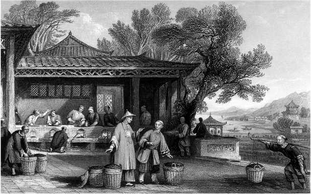
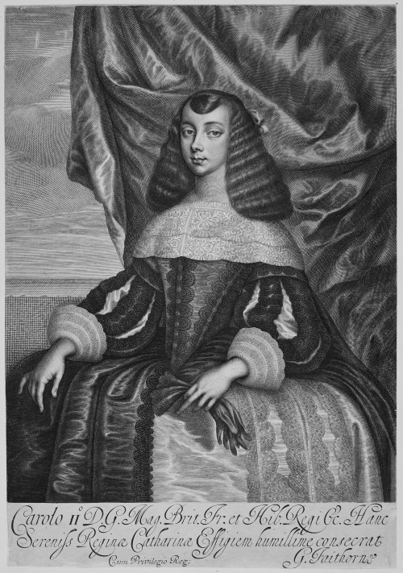
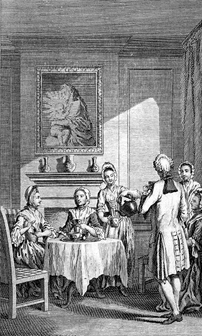

История в бокалах . Империи чая..


Лучше быть лишенным пищи три дня,
чем прожить без чая хотя бы один.
Слава Богу за чай! Что бы мир делал
без чая? Как бы все это существовало?
Напиток, покоривший мир
В 1773 году сэр Джордж Маккартни назвал Великобританию «огромной империей, над которой никогда не заходит солнце». Действительно, в период расцвета ей принадлежала пятая часть мира, четверть проживавшего на этой территории населения были ее подданными.
Несмотря на потерю североамериканских колоний после войны, в середине XVIII века Англия расширила сферу своего влияния, установив контроль над Индией и Канадой, создав новые колонии в Австралии и Новой Зеландии и отобрав у Нидерландов титул торговой «владычицы морей». Промышленная революция сделала Великобританию первой мировой сверхдержавой. На смену маленьким артелям пришли большие заводы, где неутомимые машины, управляемые паровыми двигателями, мультиплицировали человеческие умения и усилия. С имперской и промышленной экспансией англичан ассоциировался и новый, по крайней мере для европейцев, напиток – чай.
Именно чай послужил основой для расширения европейской торговли с Востоком. Прибыль от этой торговли помогла финансировать продвижение в Индию Британской Ост-Индской компании, коммерческой организации, которая стала фактическим колониальным правительством Великобритании на Востоке. Начав свой путь как напиток элиты, постепенно чай стал традиционным напитком рабочего человека. И если солнце никогда не заходило над Британской империей, значит, в любой момент где-то наступало время чаепития. Европейский потребитель не мог себе представить, что этот типично английский напиток, прежде чем попасть на их стол, должен был проделать долгий трудный путь из Китая, огромного и таинственного доминиона на другом конце света. А процесс выращивания и переработки чая вообще был тайной за семью печатями. В представлении англичан мешки с чайными листьями чудесным образом материализовались в доках Кантона – с таким же успехом этот ценный груз мог прилететь с Марса.
Тем не менее чай стал неотъемлемой частью британской культуры. Завоевав сердца британцев, он распространился по всему миру и стал самым широко употребляемым напитком на земле после воды. История чая – это история империализма, индустриализации и мирового господства.
Восхождение чайной культуры
Согласно легенде, первую чашку чая заварил второй из пяти мифических императоров Китая Шэнь Нун, чье правление традиционно датируется 2737–2697 годами до н. э. Ему приписывают изобретение сельскохозяйственных орудий и открытие лекарственных свойств растений. (Аналогично его предшественник, первый император, как говорят, подарил людям огонь, кулинарию и музыку.) По легенде, Шэнь Нун, чтобы вскипятить воду, разжег костер из веток дикого чайного куста, порыв ветра занес листья растения в горшок. Тонкий освежающий вкус напитка понравился Шэнь Нуну. Позднее в «Трактате о корнях и травах» он якобы отметил, что настой чайных листьев «утоляет жажду, уменьшает желание спать, смягчает и радует сердце». Правда, в первом издании трактата (империя Ранняя Хань, 221 до н. э. – 25 н. э.) чай не упоминается. Ссылка на него появилась лишь в VII веке. Значит, чай, по сути, не такой уж древний напиток.
Чай представляет собой настой сухих листьев, почек и цветов вечнозеленого куста Camellia sinensis, который, по-видимому, появился в джунглях восточных Гималаев, где сейчас проходит граница Индии и Китая. Тонизирующие и лечебные свойства чайных листьев были известны издревле. Их жевали, прикладывали к ранам, на юго-западе Китая измельченные листья смешивали с луком-шалотом, имбирем и другими ингредиентами, а на территории нынешнего Северного Таиланда распаренные или сваренные листья скатывали в шарики и ели с солью, маслом, чесноком, жиром и сушеной рыбой. Так что прежде чем стать напитком, чай был лекарством и пищевым продуктом.
Как и когда чай проник в Китай, точно неизвестно. Возможно, ему помогли буддийские монахи, приверженцы религии, основанной в Индии в VI веке до н. э. Сиддхартхой Гаутамой, известным как Будда. Как буддийские, так и даосские монахи обнаружили, что употребление чая оказывает неоценимую помощь при медитации, усиливая концентрацию и уменьшая усталость. Лао-цзы, основатель даосизма, живший в VI веке до н. э., считал, что чай является важным ингредиентом эликсира жизни.
Самая ранняя достоверная ссылка на чай появляется в I веке до н. э., примерно через 26 веков после предполагаемого открытия Шэнь Нуна. В книге того времени «Рабочие правила слуг» описываются правила покупки чая и способы его приготовления. А в IV веке н. э. чай стал настолько популярен, что от сбора листьев диких кустарников перешли к его культивированию. Чай распространился по всему Китаю и стал национальным напитком во времена династии Тан (618–907).
Этот период считается золотым веком в истории Китая. С 630 по 755 год население самой большой и самой богатой империи в мире утроилось, превысив 50 миллионов. В столице, Чанъане (на месте этого города сегодня расположен Сиань), величайшем мегаполисе на земле, проживало около 2 миллионов человек. В то время Китай был максимально открыт для внешнего влияния. Торговля процветала как по Шелковому пути, так и по морю – с Индией, Японией и Кореей. Одежду, прически и даже новую спортивную игру поло импортировали из Турции и Персии, экзотические продукты – из Индии, музыкальные инструменты и танцы вместе с вином в кожаных козьих бурдюках – из Центральной Азии. В свою очередь Китай экспортировал шелк, чай, бумагу и керамику. В такой динамичной и космополитической атмосфере расцветали китайская скульптура, живопись и поэзия.
Благополучие этого периода и рост населения способствовали широкому распространению нового напитка. Антисептические свойства чая, сохранявшиеся даже при непродолжительном кипячении воды, выгодно отличали его от рисового пива. Современные исследования показали, что фенолы в чае могут убивать бактерии, вызывающие холеру, тиф и дизентерию. Чай было легко приготовить, в отличие от пива он долго не портился. Фактически это была эффективная и удобная технология очистки воды, благодаря которой резко снизилась распространенность заболеваний, передающихся через воду, сократилась младенческая смертность и выросла продолжительность жизни.
Бурный рост китайской торговли чаем в течение VII века заставил торговцев Фуцзяня впервые использовать новое изобретение – бумажные деньги. Раньше роль денег играл прессованный чай. Легкие и компактные плитки в форме кирпичей идеально подходили для этой цели. Чай «в кирпичах» до сих пор используют в качестве валюты в некоторых частях Центральной Азии.
О популярности чая во времена династии Тан свидетельствует введение первого налога на чай в 780 году и успех книги, изданной тогда же. Знаменитый поэт Лу Юй написал «Чайный канон» («Ча цзин») по заказу торговцев чаем. В нем подробно описаны культивирование, правила приготовления и варианты подачи чая. Лу Юй написал еще много книг о чае, не упустив ни одного аспекта. Он описал достоинства различных видов чая, источников воды для его приготовления (в идеале это медленный горный ручей, а при его отсутствии – колодец) и даже этапы процесса кипения. «Когда пузырьки в кипящей воде подобны рыбьим глазам и есть тихий звук – это первое кипение. Когда по краям вода кипит подобно бьющим родникам в виде связок жемчуга – это второе кипение. Когда вода кипит как бурлящие волны, а звук подобен бьющимся валам – это третье кипение. Достигнув вершины кипения, вода становится старой, ее уже нельзя пить» (Лу Юй. Чайный канон. Перев. А. Габуева, Ю. Дрейзиса).
Лу Юй обладал настолько чувствительным нёбом, что, как говорили, мог идентифицировать источник воды по вкусу и даже определить, из какой части реки ее набирали. Благодаря «Чайному канону» из простого напитка, утоляющего жажду, чай превратился в символ изысканности и хорошего вкуса. Искусство дегустации и оценки чая, особенно способность распознавать разные сорта, ценились очень высоко. Приготовление чая стало почетной обязанностью главы семьи, неумение элегантно приготовить и подать чай считалось позором. Чайные вечеринки и банкеты стали популярны при дворе, где император пил специально приготовленные для него чаи, воду для которых привозили из лучших источников.

Производство чая в Китае. Листья обрабатывались вручную
Популярность чая сохранялась и в процветающей империи Сун (960-1279) вплоть до ее падения в результате монгольского завоевания в XIII веке. Первоначально монголы были кочевниками, перегонявшими с пастбища на пастбище стада лошадей, верблюдов и овец. Но в период правления Чингисхана и его сыновей они создали самую большую империю в истории, охватившую большую часть евразийской суши, – от Венгрии на западе до Кореи на востоке и Вьетнама на юге. Традиционным монгольским напитком был кумыс, получавшийся из молока кобылы в результате молочнокислого и спиртового брожения. Это объясняет, почему венецианский путешественник Марко Поло, который много лет провел при дворе китайского императора в этот период, не рассказывал о чае. Марко Поло лишь упоминал церемонию «представления чаев», но отмечал, что кумыс был «как белое вино и очень хорошо пился». Новые правители Китая не проявляли интереса к местному напитку и сохраняли свои культурные традиции.
Хан Хубилай, правитель восточной части Монгольской империи, пил отвар из степных трав и кумыс, приготовленный из молока кобыл, выращенных в его китайском дворце. Хан Мангу установил в столице Каракорум серебряный питьевой фонтан, символизирующий могущество Монгольской империи. Из его четырех кранов текло рисовое пиво из Китая, виноградное вино из Персии, мед из Северной Евразии и кумыс из Монголии. А чая не было. Но в конце концов империя рухнула, и в период правления династии Мин (1368–1644) чайная культура получила дальнейшее развитие. Усложнение ритуала, пристальное внимание к деталям, провозглашенное Лу Юем, и возвращение к религиозным корням сделали чай символом физического и духовного очищения.
Однако на небывалую высоту идею чайной церемонии подняла Япония. Чай там пили еще в VI веке, но в 1191 году буддийский монах Эйсай, вернувшись из путешествия по Китаю, поделился с соотечественниками новейшими знаниями о выращивании, сборе, приготовлении и употреблении чая. Однажды он исцелил сегуна Минамотоно Санэто-мо при помощи чая, и тот стал горячим поклонником нового напитка. Позже Эйсай написал книгу о пользе чая для здоровья, которая была необычайно популярной. К XIV столетию чай стал любимым напитком во всех слоях японского общества. Климат Японии подходил для выращивания чая, и даже самые маленькие домашние хозяйства могли себе позволить пару чайных кустов.
Японская чайная церемония – чрезвычайно сложный, почти мистический ритуал, который может длиться больше часа. Недостаточно просто соблюдать порядок измельчения чая, кипячения воды, заваривания и перемешивания напитка – необходимо разбираться в предназначении конкретной посуды и приборов, последовательности их использования. С помощью бамбукового ковшика воду переливают из кувшина определенной формы в чайник; чай насыпают мерной ложкой, перемешивают специальной ложкой, кувшин и ложку вытирают квадратной шелковой салфеткой, крышку чайника кладут на специальную подставку и т. д. Все эти предметы ведущий церемонии раскладывает в определенной последовательности на специальных салфетках. В идеале он должен сам подготовить дрова и провести церемонию в чайной, расположенной в саду определенной планировки.
По словам величайшего мастера чайной церемонии Сэнно Рикю, жившего в XVII веке, «если чай невкусный и чайные принадлежности некрасивы, если планировка деревьев и камней в чайном саду не соответствует канонам, то тогда можно уходить домой». Несмотря на невероятную формальность, некоторые правила Рикю, например о том, что разговор не должен касаться мирских дел, не так сильно отличаются от неписаных правил проведения европейского званого ужина. Японская чайная церемония стала вершиной культуры употребления напитка, пришедшего из Южной Азии, и наполнила ее разнообразным культурным и религиозным содержанием с помощью отточенных за сотни лет обычаев и ритуалов.
Чай достигает Европы
В начале XVI века, когда первые европейцы достигли Китая по морю, китайцы по праву считали свою страну величайшей на земле. Поднебесная империя, по представлениям ее жителей, находилась в центре Вселенной. Никто не мог конкурировать с ее культурными и интеллектуальными достижениями; чужестранцы считались варварами, которые, возможно, хотели бы подражать Китаю, но от их разлагающего влияния лучше всего держаться подальше. Не было ни одной европейской технологии, не известной китайцам, они опережали Европу практически во всех областях; магнитный компас, порох и книги на борту европейских кораблей были китайскими изобретениями. Португальские исследователи, которые отплыли со своей торговой базы на полуострове Малакка в поисках легендарных богатств Востока, были встречены со снисходительной усмешкой. Китай, как древнейшая цивилизация, был самодостаточным и ни в чем не нуждался.
Португальцы согласились платить дань императору в обмен на право торговли и поддерживали спорадические коммерческие контакты с Китаем в течение нескольких лет. Изделия европейского производства не представляли интереса для китайцев, хотя они были счастливы менять шелк и фарфор на золото и серебро.
В конце концов в 1557 году китайские власти разрешили португальцам создать на крошечном полуострове Макао торговый пост, через который должны были отправляться все грузы. Это позволило китайцам взимать пошлины и минимизировать контакты с иностранцами; другие европейцы не могли вести прямую торговлю с Китаем. Когда голландцы прибыли в Ост-Индию в конце XVI века, им пришлось покупать китайские товары через посредников в других странах региона.
Чай впервые упоминается в европейских докладах из региона в 1550-х годах. Но доставка его в Европу была налажена гораздо позже. Небольшие партии, возможно, попадали в Лиссабон в частном порядке с португальскими моряками, но только в 1610 году голландское судно привезло первую коммерческую партию чая в Европу, где он считался новинкой. Из Нидерландов чай достиг Франции в 1630-х годах и Англии в 1650-х годах. Это был зеленый чай, который традиционно употребляли китайцы. Черный чай, получающийся в результате длительной сушки и окисления зеленых листьев на воздухе, появился только во время династии Мин; его происхождение – загадка. Китайцы считали его пригодным только для потребления иностранцами, и именно поэтому он доминировал в экспорте в Европу. Невероятно, но европейцы долгое время ошибочно предполагали, что зеленый и черный чай – два совершенно разных ботанических вида.
Несмотря на то что чай появился в Европе на несколько лет раньше кофе, спрос на него в XVII веке был не слишком велик, во многом из-за высокой цены. Чай начал свой путь по Европе как роскошный лекарственный напиток в Нидерландах, где в 1630-х годах породил споры о его влиянии на здоровье. Первым противником чая (а также кофе и шоколада, двух других новомодных горячих напитков) был датский врач и натуралист Саймон Паулли. В его «Трактате о табаке, чае, кофе и шоколаде» сказано, что в процессе транспортировки из Китая чай становится ядовитым, «ускоряя смерть тех, кто его пьет, особенно если они старше сорока лет». Паулли гордился тем, что использовал «всю свою энергию, чтобы уничтожить бушующее эпидемическое безумие вследствие импорта чая в Европу из Китая».
Противоположной точки зрения придерживался голландский врач Николас Дирке, который считал чай панацеей. «Ничто не сравнится с этим растением, – заявил он в 1641 году. – Те, кто его использует, освобождаются от всех болезней и достигают старости». Еще более восторженно отзывался о чае другой голландский врач, Корнелиус Войтеку, автор книги о пользе чая. «Мы рекомендуем чай для всех наций и для всех народов! – писал он. – Мы призываем каждого человека, каждую женщину пить его каждый день, если возможно, каждый час начиная с десяти чашек в день и с последующим увеличением дозировки – столько, сколько может принять желудок». В лечебных целях он рекомендовал употреблять от 50 до 200 чашек в день.
Бонтеку был отмечен Голландской Ост-Индской компанией за помощь в деле увеличения продаж чая. Возможно, именно эта компания была заказчиком его книги. Примечательно, что он не одобрял популярную в это время практику добавления сахара в чай. (Некоторые медики уже тогда считали сахар вредным.) Еще одним дополнением к чаю было молоко. Еще в 1660 году в английской рекламе чая говорилось, что «он (приготовленный с молоком и водой) укрепляет внутренние органы и предотвращает чахотку, а также эффективно успокаивает боли в кишечнике».
В короткий период популярности чая среди французской аристократии между 1650 и 1700 годом молоко в него добавляли, чтобы не обжечься и защитить дорогую фарфоровую чашку, в которой подавали чай. Но в конечном счете не Франция, которая предпочла кофе и шоколад, или Нидерланды, а Великобритания стала самой «чаелюбивой» европейской страной, и это имело важные исторические последствия.
Британский чайный энтузиазм
Не будет преувеличением сказать, что почти никто в Британии не пил чай в начале XVIII века, и почти все делали это к его концу. Официальный импорт вырос с 6 тонн в 1699 году до 11 тысяч тонн (!) столетие спустя, а цена фунта чая к концу века упала в 20 раз. Следует помнить, что контрабандный чай статистика не учитывала. Вероятно, он удвоил объем импорта на протяжении большей части столетия, пока пошлина, взимаемая с чая, резко не сократилась в 1784 году. Другим немаловажным фактором была широко распространенная практика фальсификаций – ради увеличения объема чай смешивали с пеплом, листьями ивы, опилками, цветами и даже овечьим навозом, часто замаскированным химическими красителями. Чай так или иначе фальсифицировали почти на каждом этапе его пути к потребителю. Отчасти поэтому черный чай был популярнее зеленого. Ряд химических веществ, используемых для изготовления поддельного зеленого чая, были ядовитыми, тогда как черный чай, даже фальсифицированный, был более безопасным, а добавление сахара и молока делало его вполне приемлемым для употребления.
Каковы бы ни были истинные масштабы контрабанды и фальсификации, ясно, что к концу XVIII века в Великобритании было достаточно чая, чтобы каждый житель страны, независимо от социального статуса, выпивал одну или две чашки в день. Еще в 1757 году один наблюдатель заметил, что «рядом с Ричмондом есть аллея, где в летний сезон часто бродят нищие, пьющие чай. Вы можете также увидеть чернорабочих, которые чинят дороги и пьют чай, его пьют даже возчики шлаковых тележек и рабочие на сенокосе».
Монаршей милости спасибо скажем мы,
Что подарила чай и вкус большой страны,
Где солнце освещает груды яств и благ,
Где богатеем мы и торжествует флаг!
И Музы друг, чай, голове спасенье,
Он словно ветра дуновенье,
Поют в душе гласа прекрасных дев,
Возносим до небес мы лучшую из королев!
Как же получилось, что британцы приняли чай с таким энтузиазмом? Он начал свое восхождение при дворе Карла II после его брака в 1662 году с Екатериной Брагансской, дочерью короля Португалии Жуана IV Восстановителя. Ее огромное приданое включало помимо всего прочего португальские торговые посты Танжера и Бомбея и право торговать с португальскими владениями за границей. Екатерина была любительницей чая, пила его из маленьких чашек «не больше наперстка», как писал современник, и этот обычай был с энтузиазмом воспринят придворными. Через год после брака Екатерины с королем поэт Эдмунд Уоллер написал к ее дню рождения стихотворение «О чае», в котором упомянул два подарка, сделанных новой королевой нации: чай и доступ в Ост-Индию.

Екатерина Брагансская, жена Карла II, познакомила английский двор с чаем
Вторым фактором, способствовавшим росту британского чайного рынка, была монополия Британской Ост-Индской компании на импорт чая в Англию. Несмотря на то что компания изначально не имела прямого доступа в Китай, сохранившиеся документы показывают, что в 1660-х годах она начала привозить «хороший чай» из Голландии в качестве подарка королю. Этот и другие дары помогли заслужить благосклонность Карла, он постепенно расширяет полномочия компании, предоставив ей право приобретать территории, печатать деньги, содержать армию, создавать союзы, объявлять войны, заключать мир, отправлять правосудие. В течение следующего столетия простая торговая компания стала олицетворением власти Великобритании на Востоке. Такого влияния не добивалась ни одна коммерческая структура в мировой истории. Как заметил в 1799 году шотландский экономист и писатель Уильям Плейфэр, «из небольшой компании торговцев Ост-Индская компания стала арбитром Востока». Этому во многом способствовала огромная прибыль от торговли чаем.
Чай подавали на лондонских собраниях директоров компании с середины 1660-х годов, капитанам и офицерам кораблей, принадлежавших компании, было предоставлено право (и место в трюме) на провоз чая для «частной торговли». Чай был идеальным товаром для таких целей. Средняя прибыль от продажи тонны чая соответствовала заработной плате за несколько лет, а дополнительные десять тонн груза были необременительны для судна. Частная торговля чаем помогла стимулировать спрос на первом этапе, но в 1686 году она была запрещена из опасения, что это помешает начинавшей набирать обороты официальной торговле.
Первый груз чая из Восточной Индии прибыл в 1669 году из Бантама, порта на острове Ява. Первоначально он был второстепенным товаром, так как компания сначала сосредоточилась на импорте специй, а затем дешевого текстиля из Азии. Но оппозиция со стороны британских производителей текстиля побудила компанию уделять больше внимания чаю. Его стоимость в розничной продаже сильно варьировалась из-за спорадического характера предложения, но цена за фунт самых дорогих сортов чая упала с 6-10 фунтов в 1660 году до 4 фунтов к 1700 году. Чай попроще стоил 1 фунт, но годовой доход бедной семьи в то время составлял 20 фунтов, поэтому даже дешевый чай не мог стать товаром массового потребления. Он оставался предметом роскоши до конца XVII века в условиях конкуренции с кофе, который был гораздо дешевле. Чашка чая стоила примерно в пять раз дороже чашки кофе.
Только когда компания открыла торговые представительства в Китае в начале XVIII века и организовала прямой импорт чая, объемы продаж стали возрастать, а цены падать, делая чай массово доступным. К 1718 году основу импорта из Китая составлял уже не шелк, а чай. К 1721 году импорт чая достиг
5 тысяч тонн в год. В 1744 году один современник заметил, что «открытие торговли с Восточной Индией… сделало цену на чай… настолько низкой, что самый простой работяга мог себе его позволить». На своем пике чай составлял более 60 процентов общей торговли компании, а пошлина на чай – около 10 процентов доходов британского правительства. В результате чайной монополии политическое влияние компании настолько возросло, что она могла лоббировать законы в своих интересах. Импорт чая из других европейских стран был запрещен; пошлина на чай была уменьшена, чтобы увеличить продажи и расширить рынок; фальсификация чая наказывалась огромными штрафами. Сохранявшиеся тем не менее контрабанда и фальсификации свидетельствовали об огромном спросе на чай.
Единственным препятствием абсолютному господству Великобритании в Ост-Индии были голландцы. Ряд войн между двумя странами закончился в 1784 году поражением Голландии, а Голландская Ост-Индская компания была распущена в 1795 году, предоставив своему британскому конкуренту почти полный контроль над мировой торговлей чаем.
Екатерина Брагансская сделала чай модным, а Ост-Индская компания – доступным. С этого момента чай стал социальным явлением. В 1717 году Томас Твайнинг, владелец лондонской кофейни, открыл по соседству чайный магазин. Его целевой аудиторией были женщины, которые не могли покупать чай в кофейнях – их туда не допускали. Поручить покупку дорогого чая слугам они не могли – доверять им большие суммы денег было рискованно. (Чай был настолько дорогим удовольствием, что его расход фиксировался на специальных чайных коробках с закрывающимися крышками, к которым имели доступ только хозяйки дома.) В магазине Твайнинга женщины могли выпить чашку чая и купить понравившийся сорт для домашнего потребления. «Гранд-дамы стекались в дом Твайнинга в Деверо-Корт, чтобы потягивать оживляющий напиток из маленьких чашек, за который они платили свои шиллинги», – писал современник. Там же по заказу готовили специальные чайные смеси.
Британские чаепития стали эквивалентом китайских и японских чайных церемоний. Чай подавали в фарфоровых чашках, приплывших из Китая на тех же кораблях, которые везли чай. Авторы книг о чае советовали, как его готовить, в каком порядке следует обслуживать гостей, какую еду подавать и как выражать благодарность хозяину. Чай был не просто напитком, а совершенно новым явлением в жизни британцев.

Английское чаепитие в благородном окружении стало символом изысканности. 1750 год
Еще одним нововведением стали лондонские чайные сады. Первым в 1732 году открылся парк Vauxhall Gardens с освещенными дорожками, с площадками, на которых выступали музыканты и певцы, с киосками, торгующими напитками и едой, прежде всего хлебом и маслом, традиционно подававшимися к чаю. Чайные сады стали респектабельным общественным местом для встреч и знакомств с представителями противоположного пола. Как писали в журнале «Джентльмен», в одном чайном саду, White Conduit House, молодой человек, «случайно» наступив на шлейф платья девушки, предлагал чашку чая в качестве компенсации; в другом чайном саду, Parthenon, первый шаг делали женщины, просившие понравившегося молодого человека угостить их чаем. Чайные сады были особенно популярны среди женщин, лишенных возможности посещать кофейни. К этому времени респектабельные кафе начали превращаться в частные клубы, а те, что попроще, торговали алкоголем, и их все труднее было отличить от таверн. Как писал Даниэль Дефо, такие заведения «являются просто пивными, хотя думают, что название «кофейня» делает атмосферу в них лучше».
Постепенно, отчасти благодаря таким трюкам, как разбавление чая водой или повторное заваривание чайных листьев, он стал доступен для бедных. А с середины XVIII века к заработной плате добавили специальное пособие на чай. Итальянский путешественник в 1755 году заметил, что «даже обычные слуги пьют чай два раза в день».
«Мы настолько развили свою коммерческую и финансовую систему, что чай, привезенный из восточной оконечности мира, и сахар, привезенный из Вест-Индии… превращается в напиток, стоящий дешевле пива», – писал один шотландский наблюдатель в начале XIX века. Были и те, кто осуждал поголовное увлечение чаем. Вместо того чтобы подражать привычкам богатых, бедняки должны тратить деньги на более питательную пищу. Один законодатель даже предложил объявить чай вне закона для всех, чей годовой доход составляет менее 50 фунтов. Но истина, как указал один писатель XVIII века, заключалась в том, что «лишив бедных чая, их посадили бы на хлеб и воду. Употребление чая является не причиной, а следствием их бедственного положения». Напиток королевы стал напитком последней надежды для самых бедных.
В Великобритании все – начиная с верхней ступени социальной лестницы до самого «дна» – пили чай. Мода, коммерческий интерес и социальные перемены сыграли свою роль в тотальном принятии чая англичанами. В 1784 году французский путешественник заметил, что «в Англии все пьют чай… Самый скромный крестьянин пьет свой чай два раза в день, как богатый человек, а общее потребление огромно». По словам шведского путешественника, «все классы потребляют его, и если кто-то выходит на лондонские улицы рано утром, во многих местах можно увидеть маленькие столы, установленные под открытым небом, вокруг которого угольщики и рабочие потягивают из своих чашек этот восхитительный напиток».
Чай возник в самой старой империи в мире и угнездился в самой новой. Рост индустрии чая, напрямую связанный с ростом Британии как мировой державы, заложил основу для дальнейшего наращивания ее коммерческой и политической мощи.